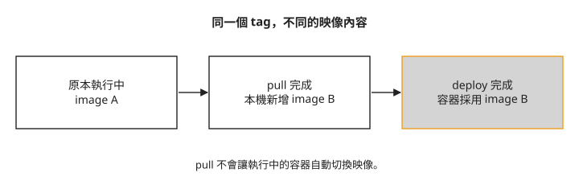
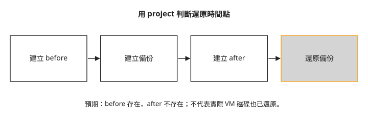
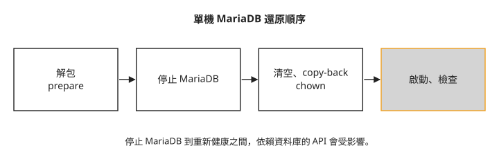

Day 22：更新服務映像，演練資料庫還原¶
上游已發布修補，但你的 OpenStack 容器仍使用原先的映像。更新之前，你還需要回答另一個問題：如果控制平面資料庫必須還原，手上的備份是否真的能回到預期時間點？本章先完成 2025.1 系列內更新，再用備份前後建立的 project 判斷單機 MariaDB 還原結果。
先決定更新範圍¶
系列內更新是在同一個 OpenStack 系列內套用修補；Kolla 通常以更新工具、拉取映像後重新 deploy 的方式處理。跨系列升級則要依目標版本的升級文件使用 upgrade，包含資料庫遷移等工作。兩者都要先讀 release notes，不能只用「同系列」推論絕對沒有相容性或資料表與欄位結構的變化。
本章只走 2025.1 的系列內更新。image tag 是映像名稱上的標籤，同一個 tag 可以指向後來重建的內容；image ID 用來辨識本機實際映像。pull 下載新映像，既有容器仍可使用舊映像；deploy 才依映像與設定差異重新建立需要更新的容器：

這個分工讓下載與服務切換分開。單機重新啟動服務仍可能中斷 API，應保留維護時段；Day 21 的指標與 log 可協助比較前後狀態，但不會自動證明每項功能正常。
步驟 1：保存設定與可還原的狀態¶
先保存 /etc/kolla、inventory 與憑證金鑰，並記下當前工具版本、映像與服務狀態。這些設定不在 MariaDB 備份裡。Azure 磁碟快照也不能取代後面的資料庫備份。
若採用本課單機 Azure lab，先正常停止 VM，確保所有相關磁碟停止寫入，再分別建立 OS、資料與 Ceph 磁碟快照。下面的資源群組與磁碟名稱要從 Azure 中這台 VM 的磁碟清單取得；各磁碟用不同快照名稱：
az snapshot create -g <資源群組> -n pre-day22-os-$(date +%Y%m%d) \
--source <OS磁碟名> --incremental true
# VM 停止寫入後，對所有相關磁碟保留同一停機區間的快照
停機區間內不要重啟 VM 或寫入磁碟，直到整組快照完成。執行中的多顆磁碟分別拍照，不會自動形成應用程式一致的備份。完成後才重新開機，確認服務健康，再繼續更新。
步驟 2：確認工具版本與映像¶
在 ~/kolla-venv 中操作，並使用 Day 1 的 inventory。下列命令使用相對路徑 all-in-one，因此要在存放該檔案的家目錄執行。先確認安裝版本與上游分支：
pip show kolla-ansible | grep Version # 20.4.1.dev17
git ls-remote https://opendev.org/openstack/kolla-ansible refs/heads/stable/2025.1
套件版本號與 Git commit 是不同資訊，不能直接拿兩者比較是否相同。依 2025.1 Operating Kolla 的工具版本原則，應使用目標系列的最新工具。本章目標是 2025.1，在同一個虛擬環境中先執行 pip3 install --upgrade git+https://opendev.org/openstack/kolla-ansible@stable/2025.1，再執行 kolla-ansible install-deps 更新依賴。這組工具更新指令本課沒有實跑，後面的結果不代表工具更新已驗證成功。
接著下載服務映像：
changed 是 Ansible 工作回報的變更數，不能直接當成下載映像的數量。以下用 MariaDB 比較 tag 目前指向的 image ID 與執行中容器的 image ID；區塊中的註解是本課的觀察值。
比對時應使用 sudo docker inspect mariadb --format "{{.Image}}" | cut -c8-19，去除 sha256: 前綴後取 12 碼，才與下方記錄的短 ID 長度一致。原指令的 cut -c8-20 會取出 13 碼；修正後的寫法本課沒有實跑。以下保留原指令與記錄：
sudo docker images --format "{{.Repository}}:{{.Tag}} {{.ID}} {{.CreatedSince}}" | grep mariadb-server
# quay.io/openstack.kolla/mariadb-server:2025.1-ubuntu-noble d3fbe3d26d58 2 hours ago
sudo docker inspect mariadb --format "{{.Image}}" | cut -c8-20
# 03fdc2d535fd ← 跑著的容器還在舊 image
兩個 ID 不同，表示新映像已下載，但執行中的容器尚未切換。這也是為什麼只做 pull 不能算更新完成。
步驟 3：跑完整 prechecks，先處理 Octavia 相容性¶
之前常用 --tags 只處理新服務。更新整個部署前，應檢查所有已啟用服務：
若沿用 Day 4 的 Amphora 與 octavia_network_type: "tenant"，這組設定會遇到 OVN 的相容性檢查。此時先決定仍需不需要 Amphora，不能把 provider 改掉只為通過檢查。
這條演練路線改為只啟用 OVN provider，設定如下：
這會使新建 --provider amphora 的負載平衡器不再可用，前面依賴 Amphora 的 CAPI／Magnum 指引也不能原樣沿用。既有 Amphora LB 的管理與後續生命週期要另外處理。如果仍需要它們，應先依 Kolla 2025.1 的支援方式重新規劃 Amphora 管理網路；本課沒有提供該遷移的完整操作證據，不能把這次 provider 變更視為無影響修補。
另外確認 Day 15 的 ceph_rgw_swift_compatibility: "false"，避免完整部署將 RGW 的 /swift/v1 endpoint 改成不匹配的 /v1。處理完設定後重新跑 prechecks；以下是本課成功結果的節錄：
步驟 4：套用映像與檢查服務¶
確認 prechecks 通過與維護時段已開始，再執行：
部署完成後，先檢查容器健康、MariaDB image ID 與服務目錄，再驗證本次使用的服務功能。下方 image ID 查詢也應改用 sudo docker inspect mariadb --format "{{.Image}}" | cut -c8-19，取 12 碼與步驟 2 比較；修正後的寫法本課沒有實跑。以下保留原指令與記錄：
sudo docker ps --format "{{.Names}} {{.Status}}" | grep -i unhealthy # (空)
sudo docker inspect mariadb --format "{{.Image}}" | cut -c8-20 # d3fbe3d26d58 ← 換上新映像了
openstack service list | wc -l # 服務數不變
MariaDB 的 ID 應對上步驟 2 下載的映像。沒有 unhealthy、服務數不變，都是初步檢查；它們不能取代建立／查詢資源或應用程式連線測試。
步驟 5：建立資料庫備份與時間點標記¶
Mariabackup 能在資料庫運作時建立實體備份。Kolla 將備份存入 Docker volume mariadb_backup。先在 /etc/kolla/globals.yml 加入以下 YAML 設定：
接著重新設定 MariaDB，建立備份需要的帳號與權限，再執行全量備份：
確認備份檔存在：
sudo ls -lh /var/lib/docker/volumes/mariadb_backup/_data/full-*/
# mysqlbackup-13-07-2026-1783920508.qp.xbc.xbs.gz 4.1M
這份備份包含控制平面資料庫的紀錄，不包含 VM 的磁碟內容、Ceph 物件或所有設定金鑰。備份 volume 仍在原主機上，也不是主機故障後可獨立取回的異地副本。
要驗證還原時間點，接著在另一份備份前後各建立一個 project。後面的還原必須選擇兩個 project 建立動作之間產生的那份備份，不能選剛才較早的檔案：
openstack project create day22-before-backup # 備份前建 → 還原後應該「在」
kolla-ansible mariadb-backup -i all-in-one
openstack project create day22-after-backup # 備份後建 → 還原後應該「消失」
下圖呈現預期差異：before 應留下，after 應消失。這比只確認 API 回應更能分辨還原到哪個時間點。

這是可丟棄 lab 的還原演練。開始前停止使用者與自動化對雲的變更；備份後新增的實體 VM、volume 不會因資料庫倒退而自動一起消失，不能把這個流程直接套在持續變動的正式環境。
步驟 6：準備備份，再停機還原¶
prepare 會套用備份內的交易紀錄，讓實體備份達到可還原狀態；copy-back 再把它放回 MariaDB 資料目錄。下圖標出資料庫停止服務的區間：

先將 <日期> 替換為步驟 5 選定的備份目錄及完整檔名。確認備份與資料庫映像版本相容，再用臨時容器解包、prepare：
sudo docker run --rm --volumes-from mariadb --volume mariadb_backup:/backup \
quay.io/openstack.kolla/mariadb-server:2025.1-ubuntu-noble bash -c '
cd /backup && rm -rf restore && mkdir -p restore/full
gunzip -k full-<日期>/mysqlbackup-<日期>.qp.xbc.xbs.gz
mbstream -x -C restore/full/ < full-<日期>/mysqlbackup-<日期>.qp.xbc.xbs
mariabackup --prepare --target-dir /backup/restore/full'
# [00] completed OK!
確認 prepare 成功後才停止 MariaDB。從這裡起，依賴資料庫的控制平面 API 會受影響：
以下動作會刪除目前 MariaDB 資料目錄，只適用於已選定備份並準備還原的演練。--volumes-from mariadb 讓臨時容器操作同一份資料；copy-back 後保留 chown，讓 MariaDB 的 mysql 使用者能存取檔案：
sudo docker run --rm --volumes-from mariadb --volume mariadb_backup:/backup \
quay.io/openstack.kolla/mariadb-server:2025.1-ubuntu-noble bash -c '
rm -rf /var/lib/mysql/* /var/lib/mysql/.[!.]*
mariabackup --copy-back --target-dir /backup/restore/full
chown -R mysql:mysql /var/lib/mysql'
重新啟動 MariaDB，等健康檢查通過，再用管理員 openrc 查 project：
sudo docker start mariadb
openstack project list | grep day22
# day22-before-backup ← 在(正確)
# ← day22-after-backup 消失了(正確)
確認 before 存在、after 不存在，再檢查各服務與受影響資源。這兩個標記只驗證所選資料庫時間點，不是整朵雲所有資料一致性的完整測試。
疑難排解¶
完整 prechecks 擋下原本可用的 Octavia 設定¶
只跑特定 tags 時，不會完整檢查其他角色。tenant 型 Amphora 管理網路與 OVN 的組合必須重新評估；步驟 3 說明切成 OVN provider 的代價與仍需 Amphora 時的處理範圍。不要直接對既有 LB 宣稱已完成遷移。
想一想¶
- 新映像已在主機上，執行中的容器仍使用舊 ID，更新還缺哪個步驟？
- 還原後 before 與 after 都還在，這足以證明成功嗎？應重新核對哪個時間點？
- 備份後又建立了一顆 volume，還原控制平面資料庫是否代表那顆 volume 的實際資料也回到了備份當時？
小結¶
更新要分辨工具、映像與執行中容器的版本；備份還原要分辨資料庫紀錄、設定與實際資源的狀態。用 image ID 與備份前後的 project 標記，可以各自驗證一項具體結果。將這些證據與服務檢查放在一起，才知道更新或還原還有哪些部分尚未完成。
延伸閱讀¶
想再深入，可以從這幾份開始：
- Kolla-Ansible 2025.1 Operating Kolla：對照系列內更新、跨系列升級與設定備份。
- Kolla-Ansible 2025.1 MariaDB 備份與還原：確認全量、增量與多節點還原差異。
- Mariabackup 總覽：理解 prepare 與實體備份的一致性。
- OpenStack 版本時間表：規劃跨系列路線前，確認系列維護狀態與 SLURP 升級範圍。
下一步¶
Day 23 改用獨立的多節點環境，檢查 API 入口與資料庫多數決如何影響故障時的服務。